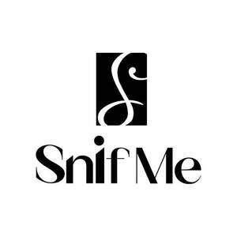
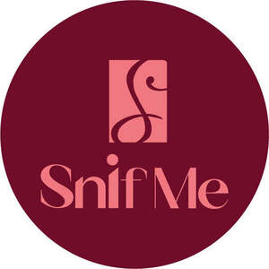

Trade Mark Journal No.2025/026 27 June 2025
UK00004214634 5 June 2025 (3)
Mark 1

Mark 2

- Class 3
- Preparations for home care washing liquids; washing gels; washing pods; liquid washing detergents; laundry pods; laundry gels; laundry sprays; washing balls containing washing detergent; liquid fabric conditioner; liquid fabric softener; laundry sheets impregnated with fabric softener; laundry sheets impregnated with detergent; colour run prevention laundry sheets; preparations for home care; preparations for body care; parts and fittings for all of the aforementioned goods. ; Washing preparations; Preparations for the care of the body; Washing preparations for household purposes; Washing liquids; Cleaning and fragrancing preparations; Laundry liquids; Liquid laundry detergents; Powder laundry detergents; Laundry detergents; Washing powder; Laundry powder; Washing balls filled with laundry detergents; Laundry balls containing laundry detergent; Laundry preparations; Preparations for the bath and shower; Cosmetics preparations; Laundry detergents for household cleaning use; Powder for laundry purposes; Fabric softeners for laundry; Softeners (Fabric -) for laundry use; Fabric softeners for laundry use; Fabric softener for laundry; Shower gels; Fabric softener for laundry use; Laundry balls filled with laundry detergents; Laundry fabric conditioner; Detergents; Scented linen sprays; Room scenting sprays; Anti-static sprays for clothing; Spray cleaners for household use; Substances for laundry use; Household detergents; Bath and shower gel; Stain removers; Stain removing agents; Stain removing preparations; Fabric conditioners; Fabric softener; Fabric softeners; Fabric conditioning preparations; Scented fabric refresher sprays; Fabric brighteners; Scented fabric refresher spray; Cloths impregnated with a detergent for cleaning; Pre-moistened towelettes impregnated with a detergent for cleaning; Antistatic drier sheets; Anti-static dryer sheets; Antistatic dryer sheets; Colour run prevention laundry sheets; Color run prevention laundry sheets; Scents; Household fragrances; Room fragrances; Scented body lotions; Fragrance for household purposes; Scented body lotions and creams; Reed diffusers; Antistatic sprays for clothing; Fragrance emitting wicks for room fragrance; Body butters; Body scrub; Body cleansing foams; Hand washes; Body lotion.
SNIF LIMITED